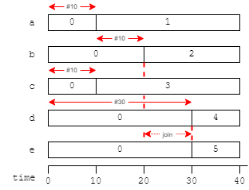

Hardware, and therefore a HDL, is highly parallel too.
In a parallel block, all statements are executed ‘simultaneously’, as if they were in separate blocks.
Sometimes this make no difference. It is important when inserting delays, however.
These blocks can be nested.
People with a software background coming to HDLs/hardware design often tend to write sequential code, though familiarity/habit: do this then so that …
Fight this temptation! Every code block in a module is running in parallel and this (naturally) extends to the testbech code too. You'll find it much easier, in the long run, to have multiple (semi-)independent parallel functions which are not locked together in sequence/time.
Of course as processors get more numerous rather than individually faster, this is also something of the future in software programming, so practice with the principle in a HDL (where it is, perhaps, more ‘natural’) is transferrable in that direction too.
Blocks compose much as you might expect. In terms of timing a sequential block will take the sum of its internal delays whereas a parallel block will take the maximum of its individual delays.
initial
begin
a = 0; b = 0; c = 0; d = 0; e = 0;
 fork
begin
#10 a = 1;
#10 b = 2;
end
fork
#10 c = 3;
#30 d = 4;
join
join
e = 5;
#10 $stop;
end
Individual blocks can be given unique names after the begin or fork.
begin: my_block
This can sometimes aid in identification in traces.
Up to simulation
Back to functional simulation
Forward to simulation time